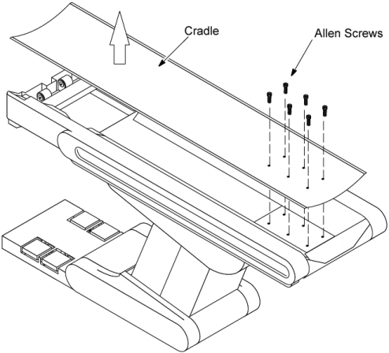

Operating Documentation
Direction 5181166-800, Rev# 7
BrightSpeed Select Service Methods Adv
Operating Documentation |
| Required Persons | Preliminary Reqs | Procedure | Finalization |
|---|---|---|---|
| 1 |
| Last Revised: | 16 March 2007 |
| Item | Qty | Effectivity | Part# | Manufacturer | |
|---|---|---|---|---|---|
| Cradle Assembly | 1 | - | 2115992–4 | - | |
| For systems powered from a power distribution box which has
a lockout capability, perform the following steps at appropriate timings
in each component replacement procedure: .......... Turn off and lock out the system power at the main input (Power Distribution Box). .......... Restore system power. .......... | |
| Understand and follow the Safety Guidelines Manual. | |
Move the cradle OUT to its fully retracted position (farthest from Gantry).
Raise the Table to its highest position.
Remove power from Table by turning off “120VAC”, “Axial Drive” and “HVDC” switches on the service switch panel.
Remove the six Allen screws from the cradle end, and then slide out the cradle.
Illustration 1: Cradle Replacement

Install the new cradle.
After installing the new cradle, perform the following adjustment according to the CD–ROM manual, Functional Check & Adjustment.
GAP BETWEEN CRADLE AND CRADLE SUPPORT
-